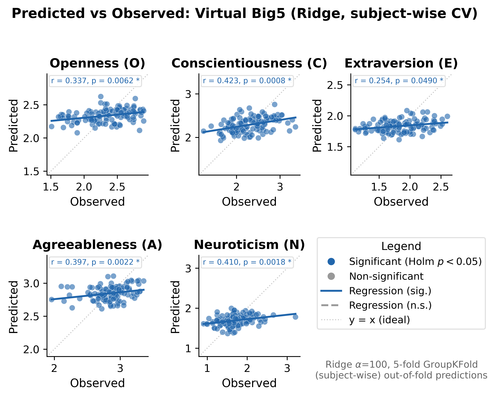
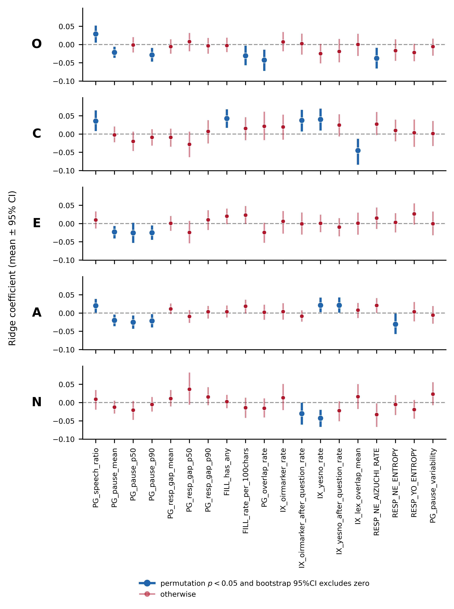

📐 CEJC home2 HQ1（N=120）から抽出した19特徴量（Classical 10 + Novel 9）のバイオリンプロット。

| # | Classical（既存研究ベース: 10個） | Novel（新規提案: 9個） | ||
|---|---|---|---|---|
| 特徴量名 | 概要 | 特徴量名 | 概要 | |
| 1 | PG_speech_ratio | Speech ratio | IX_oirmarker_rate | OIR marker rate |
| 2 | PG_pause_mean | Mean pause duration | IX_oirmarker_after_question_rate | Post-question OIR rate |
| 3 | PG_pause_p50 | Median pause | IX_yesno_rate | Yes/No response rate |
| 4 | PG_pause_p90 | 90th percentile pause | IX_yesno_after_question_rate | Post-question Yes/No rate |
| 5 | PG_resp_gap_mean | Mean response gap | IX_lex_overlap_mean | Lexical overlap |
| 6 | PG_resp_gap_p50 | Median response gap | RESP_NE_AIZUCHI_RATE | Post-NE aizuchi rate |
| 7 | PG_resp_gap_p90 | 90th percentile response gap | RESP_NE_ENTROPY | Post-NE response entropy |
| 8 | FILL_has_any | Filler utterance rate | RESP_YO_ENTROPY | Post-YO response entropy |
| 9 | FILL_rate_per_100chars | Filler rate per 100 chars | PG_pause_variability | Pause duration CV |
| 10 | PG_overlap_rate | Overlap rate | ||


| 次元 | robs | p | pHolm | 判定 |
|---|---|---|---|---|
| O 開放性 | 0.337 | 0.0062 | 0.0124 | * |
| C 誠実性 | 0.423 | 0.0008 | 0.0040 | * |
| E 外向性 | 0.254 | 0.0490 | 0.0490 | *（境界的） |
| A 協調性 | 0.397 | 0.0022 | 0.0072 | * |
| N 神経症傾向 | 0.410 | 0.0018 | 0.0072 | * |

| 次元 | O | C | E | A | N | 計 |
|---|---|---|---|---|---|---|
| 一致特徴量数 | 6 | 5 | 3 | 7 | 2 | 23 |
| うち新規（Novel） | 1 | 3 | 0 | 3 | 2 | 9 |
| 次元 | Model A r | Model A p | Model B r | Model B p | Δr |
|---|---|---|---|---|---|
| O | 0.337 | 0.0070 | 0.401 | 0.0020 | +0.064 |
| C | 0.423 | 0.0020 | 0.447 | 0.0010 | +0.024 |
| E | 0.254 | 0.0559 | 0.254 | 0.0509 | +0.000 |
| A | 0.397 | 0.0030 | 0.517 | 0.0010 | +0.120 |
| N | 0.410 | 0.0030 | 0.406 | 0.0010 | −0.004 |


| 次元 | 条件1 テキスト | 条件2 要約のみ | 条件3 ランダム | 判定 |
|---|---|---|---|---|
| O | 0.337 * | 0.546 * | 0.021 | 条件3で消失 |
| C | 0.423 * | 0.649 * | −0.090 | 条件3で消失 |
| E | 0.254 * | 0.296 * | −0.032 | 条件3で消失 |
| A | 0.397 * | 0.479 * | 0.201 | 条件3で消失 |
| N | 0.410 * | 0.748 * | −0.179 | 条件3で消失 |
| 次元 | 条件1 | 条件2 | 判定 |
|---|---|---|---|
| O | ≥ 0.78 | 0.063 | 崩壊 |
| C | ≥ 0.78 | 0.176 | 崩壊 |
| E | ≥ 0.78 | 0.041 | 崩壊 |
| A | ≥ 0.78 | 0.194 | 崩壊 |
| N | ≥ 0.78 | 0.298 | 崩壊 |